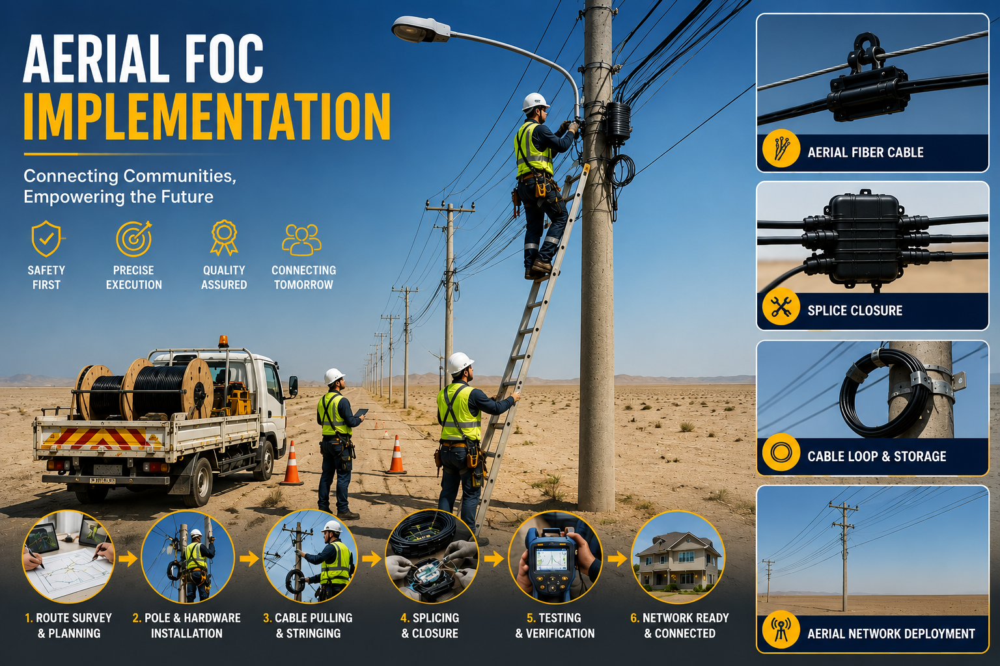
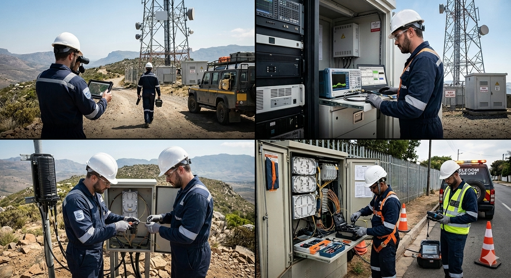

OSP Implementation
Comprehensive Outside Plant (OSP) implementation services for the deployment of reliable and scalable telecommunications infrastructure. Our experienced teams manage all aspects of network construction, ensuring quality, safety, and timely project delivery.
- Route surveying and field verification
- Trenching, micro-trenching, and directional drilling
- Duct, sub-duct, manhole, and handhole installation
- Fiber optic cable laying and infrastructure deployment
- Civil construction and restoration works
- Utility coordination and permit compliance
- Testing, commissioning, and network integration
- As-built documentation and GIS data delivery

Fiber Optic Cable Installation
Professional installation of single-mode (SM) and multi-mode (MM) fiber optic networks across underground, aerial, ducted, and direct-buried environments. Our experienced technicians ensure high-quality deployment, precise splicing, and reliable network performance from installation through commissioning.
- Underground and duct fiber cable installation
- Direct-buried and aerial fiber deployment
- Fiber optic cable pulling and routing
- Fusion splicing and fiber termination
- ODF, FDH, and distribution cabinet installation
- Splice closure installation and sealing
- OTDR testing, commissioning, and acceptance
- Cable labeling, documentation, and handover

FTTH Implementation
End-to-end Fiber-to-the-Home (FTTH) deployment services delivering high-speed, reliable broadband connectivity to residential and commercial subscribers. Our experienced teams ensure seamless network rollout from feeder infrastructure to customer activation.
- FTTH network planning and route design
- Feeder, distribution, and drop fiber installation
- OLT, splitter, and FDH cabinet deployment
- Fiber splicing and distribution network integration
- Network testing, commissioning, and optimization
- As-built documentation and GIS data updates

Testing & Commissioning
Comprehensive testing and commissioning services to ensure telecom networks are fully operational, compliant with industry standards, and ready for seamless service delivery. Our specialists perform detailed verification and performance validation to guarantee network reliability and optimal functionality.
- Fiber optic cable testing and certification
- OTDR, power meter, and loss measurement testing
- End-to-end network performance verification
- Fiber splicing and link quality validation
- Equipment installation and configuration testing
- Acceptance testing and compliance verification
- Fault identification and corrective actions
- Commissioning reports and handover documentation

Aerial FOC Implementation
Professional aerial fiber optic cable (FOC) installation services for reliable, high-performance telecommunications networks. Our experienced teams deliver safe and efficient overhead fiber deployments using industry-standard practices to ensure long-term network reliability and service continuity.
- Pole route surveying and network planning
- Pole installation and structural assessment
- Aerial FOC Installation , stringing and tensioning
- Fiber splicing, termination & joint closure installation
- OTDR testing, commissioning & quality assurance
- As-built documentation and GIS data updates

Operation & Maintenance (O&M)
Reliable Operation & Maintenance (O&M) services designed to ensure continuous network availability, optimal performance, and rapid fault resolution. Our dedicated teams provide proactive monitoring, preventive maintenance, and corrective support to maximize network uptime and service quality.
- 24/7 Fiber optic network Monitoring & Fault response
- Fiber fault localisation & emergency restoration
- Emergency response and outage management
- Scheduled preventive maintenance inspections
- Network performance analysis and optimization
- SLA-Based service agreements

Civil & Infrastructure Work
The physical backbone of every network begins with quality civil work. MetaTech's civil teams are experienced in all aspects of telecom civil construction — executed safely and to municipal authority standards across KSA.
- Open trenching and backfilling
- Horizontal directional drilling (HDD)
- Concrete duct bank and cable tray installation
- Manhole and handhole construction and fitting
- Road reinstatement and surface restoration
- Building entry and riser infrastructure preparation
Heavy Equipment & Engineering
Fleet of modern machinery for large-scale infrastructure projects, including excavators, trenchers, and directional drilling machines.
- HDD Drilling
- Trenching Machines
- Civil Excavation
- Equipment Rental